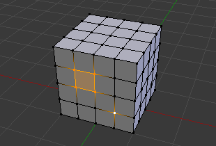

Вступ¶
Існує багато способів виділення елементів і від Режиму Виділення Сітки (Mesh Select Mode), в якому ви знаходитесь, залежить, які інструменти вибору доступні. Спочатку ми пройдемо ці режими, після чого подивимось на основні інструменти вибору.
Режим вибору (Selection Mode)¶
Віджети Заголовку Режиму Вибору (Select Mode Header Widgets)¶
Довідка
| Mode: | Edit Mode |
|---|---|
| Menu: | |
| Hotkey: | Ctrl-Tab |

Кнопки вибору Режиму Редагування.
У Режимі Редагування є три різні режими вибору. Ви можете переходити в різні режими, вибираючи одну з трьох кнопок заголовку.
- Вершини (Vertices)
У цьому режимі вершини відображаються як точки.
Вибрані вершини відображаються помаранчевим кольором, не вибрані - чорним, а активна або остання вибрана вершина - білим кольором.
- Ребра (Edges)
У цьому режимі вершини не відображаються.
Замість цього, вибрані ребра відображаються помаранчевим кольором, не вибрані - чорним, а активне або останнє вибране ребро - білим кольором.
- Грані (Faces)
У цьому режимі грані відображаються з точкою у центрі, яка використовується для вибору грані.
Вибрані грані та їх точки вибору відображаються помаранчевим кольором, не вибрані - чорним, а активна або остання вибрана грань підсвічується білим кольором.
Використовуючи ці кнопки, ви можете користовуватися клавішами-модифікаторами, див: Switching Select Mode.
Майже всі інструменти доступні у всіх трьох режимах вибору. Тому ви можете Обертати (Rotate), Масштабувати (Scale), Видавлювати (Extrude) і т.д. у всіх режимах. Звичайно, обертати або масштабувати одну точку не дасть ніякої користі (без встановлення точки опори (pivot point) в інше місцеположення), тому деякі інструменти менше або більше придатні для застосування в деяких режимах.
Див Рис. Selection modes. з прикладами різних режимів.
Кілька Режимів Вибору (Multiple Selection Modes)¶
By holding Shift-LMB when selecting a selection mode, you can enable multiple Selection Modes at once. This allows you to quickly select Vertices/Edges/Faces, without first having to switch modes.

Vertex mode example. |

Edge mode example. |

Face mode example. |

Приклад змішаного режиму (Mixed mode). |
Перемикання Режиму Вибору¶
При перемиканні режимів у порядку зростання (тобто, від простішого до більш складного), від Вершин до Ребер та від Ребер до Граней, вибрані частини залишаться вибраними, якщо вони утворюють повний елемент у новому режимі.
Наприклад, якщо всі чотири ребра у грані вибрані, перемикання з режиму Ребер до режиму Граней залишить грань вибраною. Всі вибрані частини, що не утворюють повний набір у новому режимі, стануть невибраними.
|
Edge mode, the initial selection. |

Switching to Face mode. |
Отже, при перемиканні у спадаючому порядку (тобто, від більш складного до простішого), всі елементи, що визначають елемент "вищого рівня" (такий як грань) будуть вибраними (наприклад, чотири вершини або ребра у чотирикутнику).
Розширення/Звуження Вибору¶
Тримаючи Ctrl при виборі вищого режиму виділення, всі елементи, що торкаються поточного виділення, будуть додані, навіть якщо виділення не формує цілий елемент вищого рівня.
Або звужуючи виділення при переході до нижчого режиму.
|
Vertex mode, the initial selection. |

Expanding to Edge mode. |
Обмежити Вибір до Видимого (Limit Selection to Visible)¶
Якщо ви перебуваєте у щільному (solid), затіненому (shaded) або текстурованому (textured) режимі затінення вікна перегляду (а не обмежуючий паралелепіпед ( bounding box) або каркас (wireframe)), у вас буде четверта кнопка у заголовку, що виглядає як куб, праворуч від режимів вибору.
Коли увімкнуто, обмежує можливість бачити або вибирати вершини, закриті геометрією об'єкта (так, неначе об'єкт цілістний (solid)). Це зроблено обрізанням за допомогою буфера глибини вікна перегляду (viewport).

Limit Selection to Visible option is disabled. |

Limit Selection to Visible option is enabled. |
{kind=link}
Інструменти вибору (Selection Tools)¶
Меню вибору в режимі редагування містить інструменти для виділення компонентів. Вони описуються детальніше на наступних сторінках.
Вибір рамкою (Border Select)¶
Вмикає прямокутну область для виділення B.

Початок. |

Вибір. |

Завершено. |
In Fig. Початок., Border Select has been activated and is indicated by showing a dotted cross-hair cursor. In Fig. Вибір. the selection region is being chosen by drawing a rectangle with the LMB. Finally, by releasing LMB the selection is complete; see Fig. Завершено..
Вибір Колом (Circle Select)¶
Enables a circular-shaped region for selection C.

Початок. |

Вибір. |

Dragging. |
Мал. Circle Select example. є прикладом виділення ребер, знаходячись у Режимі Вибору Ребер (Edge Select Mode). Як тільки ребро перетинається із колом, воно стає вибраним. Інструмент є інтерактивним, тому ребра вибираються під час перетягування області кола з LMB.
Якщо ви хочете зняти виділення з елементів, затисніть MMB та почніть натискати або перетягувати знову.
Ghi chú
If you are in bounding box or wireframe viewport shading mode, or when not enabled Limit Selection to Visible. For Faces select mode, the circle must intersect the face indicators usually represented by small pixel squares; one at the center of each face.
Виділення Ласо (Lasso Select)¶
To activate the tool use the Ctrl-LMB while dragging.

Початок. |

Вибір. |

Завершено. |
Більше Інструментів¶
- Вибрати все або Скасувати вибір з усього ((De)select All) A
- Виділити усі або жодні з компонентів полігональної сітки.
- Обернення (Inverse) Ctrl-I
- Вибирає всю не виділену геометрію та скасовує вибір з поточних вибраних компонентів.
- Випадковий (Random)
- Вибирає випадкову групу вершин, ребер або граней, виходячи з відсоткового значення.
- Більше Ctrl-NumpadPlus
- Поширює виділення, додаючи геометрію, яка прилягає до вибраних елементів.
- Менше Ctrl-NumpadMinus
- Знімає виділення з геометрії, що формує межі поточного вибору.